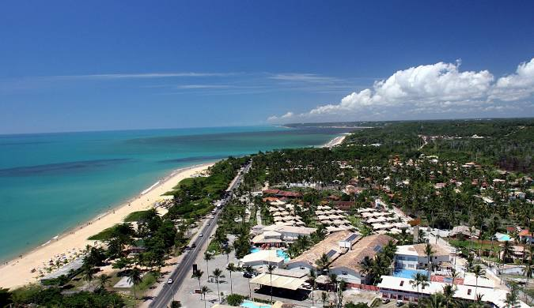

A Bahia é um dos estados mais icônicos do Brasil, localizado no nordeste do país. Conhecida por sua rica cultura, mistura de tradições africanas e indígenas, e sua música vibrante, como o axé e o samba de roda, a Bahia é um verdadeiro berço da cultura brasileira. Sua capital, Salvador, é um importante centro histórico, com o Pelourinho, suas igrejas barrocas e o famoso Elevador Lacerda. O estado também é famoso pelas suas belas praias, como a de Porto Seguro e a Ilha de Itaparica, além de uma culinária saborosa, com pratos típicos como a moqueca e o acarajé. A Bahia é um lugar que exala alegria, história e um calor humano único.
 Voltar